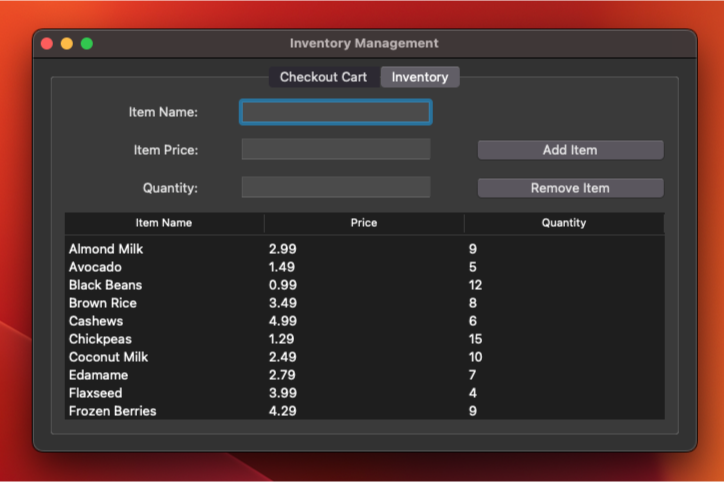

Helios POS: A Custom-Built Solution for Small Businesses
Contract Development
May 2024 – Present
Introduction
Small businesses often face challenges finding POS solutions that are both efficient and cost-effective. Enter Helios POS, a project that I led alongside a talented team of two other developers. Designed with the specific needs of small businesses in mind, Helios POS offers a fast, lightweight, and highly compatible system, providing a smooth and reliable experience across macOS, Windows, and Linux. This post dives into the journey, features, and impactful results of Helios POS—our custom-built solution that combines simplicity and power.
Project Overview
In May 2024, our team embarked on a mission to revolutionize POS systems for small businesses. From the outset, we were focused on delivering an experience that would streamline transactions, optimize checkout times, and minimize the usual technical complications of multi-platform deployment. Helios POS isn't just about transaction processing; it’s about creating an efficient, user-friendly environment that empowers business owners to focus on what they do best—serving their customers.
Key Features and Innovations
- Team Leadership and Collaboration: As the team lead, I coordinated the project’s goals and managed development timelines, keeping our team aligned from day one. Working across different time zones (Canada, India, and Toronto), we used Notion to keep our tasks organized and ensure transparent communication.
- Optimized Transaction Speeds: The POS system was built with speed as a priority. Utilizing Python for backend processing and MongoDB for data management allowed us to boost transaction speeds by 25%, an upgrade that small businesses immediately felt. Fast transaction processing means happier customers, quicker checkouts, and fewer delays.
- Cross-Platform Compatibility: Helios POS is designed to work seamlessly on macOS, Windows, and Linux. This cross-platform compatibility eliminates the headaches associated with device-specific POS systems, achieving a remarkable 100% satisfaction rate among users. No matter the device, Helios POS adapts, ensuring a smooth experience every time.
- Checkout Process Optimization: By refining transaction handling, we reduced checkout times by 30%, allowing businesses to serve customers faster and more efficiently. This optimization was especially valuable during peak hours, where every second saved contributes to better customer service and improved sales flow.
- Streamlined Inventory Label Generation: One of the standout features we added was the ability to generate inventory labels directly from the MongoDB database. This small but powerful addition allowed for faster product stocking, as labels could now be printed directly from the inventory, reducing the need for manual label creation and saving employees valuable time.
The Impact of Helios POS
The impact of Helios POS extends beyond the technical realm—it’s a tool that empowers small business owners to thrive. Feedback from users has been overwhelmingly positive, highlighting the system’s speed, simplicity, and versatility. By reducing checkout times and improving inventory management, Helios POS helps small businesses serve their customers more efficiently while minimizing back-end stress.
Conclusion
Helios POS is more than just software; it's a commitment to small businesses and their success. Leading this project was a fulfilling experience, showcasing the power of a well-coordinated team and the potential of tech solutions tailored to real-world needs. I’m excited to see where Helios POS goes next and the impact it will continue to have on small businesses everywhere.
Thank you for reading! Helios POS stands as a reminder that meaningful solutions start with understanding the needs of those we serve.